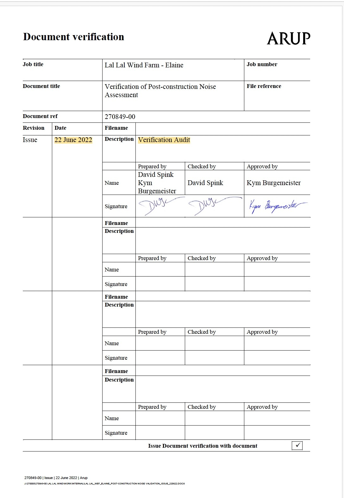
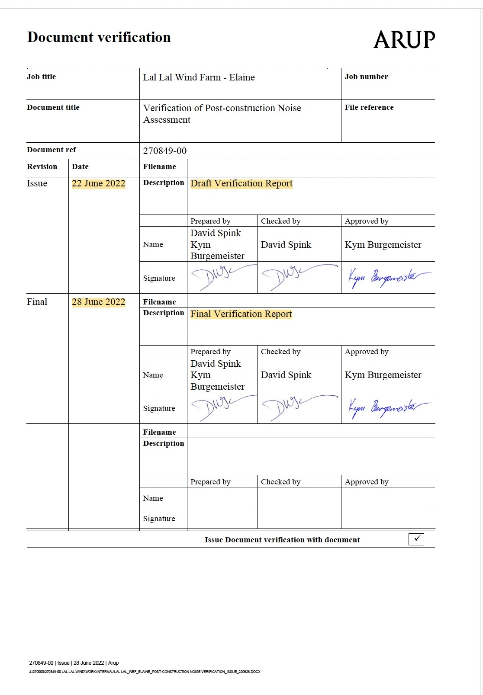

Independent Documentary Verification
A plain-English explanation of how this repository compares mandatory requirements with the disclosed administrative and evidentiary record.
Requirement, record, reconciliation
The verification method sits between the governing Framework and the detailed evidence pages. It keeps the repository focused on documents rather than opinion.
Identify the requirement
The page starts with the relevant Planning Permit, NZS 6808:2010, Noise Compliance Testing Plan or other governing document.
Locate the disclosed record
The repository then identifies the disclosed reports, correspondence, Freedom of Information material and agency records relevant to that requirement.
Ask what can be verified
The final question is limited: does the disclosed record allow the requirement to be independently followed, checked or reconciled?
The same pathway applies across the evidence pages
Each evidentiary page should be read against the same documentary sequence.
Verification is not adjudication
This repository does not determine compliance, breach, liability, legal rights or regulatory findings.
It records whether the disclosed documents allow a reader to trace the pathway from a mandatory requirement to the documents said to demonstrate, address or rely upon that requirement.
Use the record's terms carefully
The repository uses the technical and documentary language appearing in the governing framework. Where a term needs explanation, the first-use link should point to the Glossary.
For example, the repository uses noise-sensitive location where that is the relevant NZS terminology, rather than substituting a different phrase.
The K15aa method
The K15aa page remains the benchmark for evidentiary presentation. Other issue pages should follow the same restrained structure.
Requirement
What did the permit, standard, endorsed plan or other document require?
Disclosed documents
What documents have been disclosed, located, relied upon or said not to be held?
Verification question
What question remains for an independent reader when the requirement is compared with the disclosed record?
Move from verification to the evidence
The Verification page explains the method. The issue pages apply it to specific parts of the record.
Pre-construction Assessments
Document lineage, predictive assessment, Environmental Auditor peer review and later reliance.
K15aa
Background sound, replacement monitoring, later reliance and disclosure record.
NCTP
Endorsed compliance testing methodology and mandatory reporting pathway.
NZS 6808
Technical definitions and assessment language used throughout the record.
SAC
Special Audible Characteristics, attended observations and reporting verification.
Permit Amendment
Administrative transition involving Conditions 23–27 and the NCTP framework.
Documents
Primary documents and executed Trustee records for independent checking.
Primary verification material
The detailed record remains in the executed documents and source material. This page is a reader guide to the method used to read those documents.
ARUP Elaine verification record
The ARUP document verification sheets form part of the administrative record because they record the controlled development of the Elaine verification documentation.
22 June 2022
The document verification sheet dated 22 June 2022 records the description as “Verification Audit”.

28 June 2022
The subsequent document verification sheet records a “Draft Verification Report” dated 22 June 2022 and a “Final Verification Report” dated 28 June 2022.

Predictive assessment identified during ARUP verification
The published Elaine, Yendon and Stage 2 Environmental Auditor verification statements each identify Marshall Day Acoustics Report No. 002 20170649, dated 17 January 2018, as the predictive assessment considered. The same statements do not identify the June 2018 Sonus assessment among those predictive assessment documents.